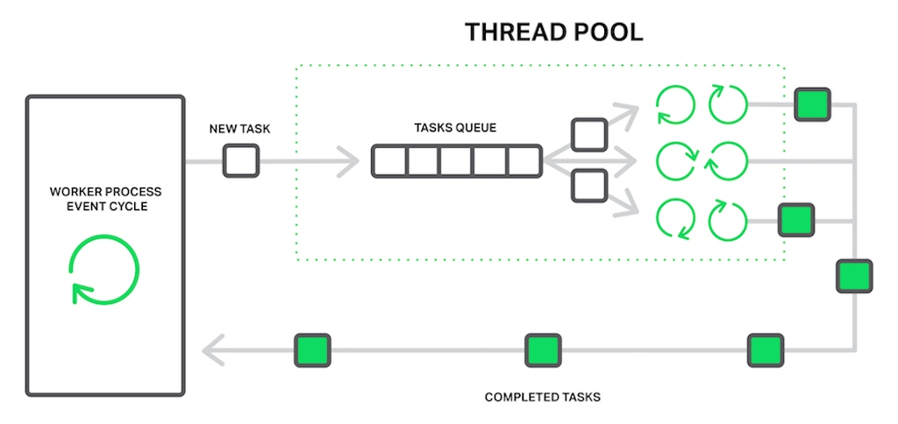

https://www.nginx.com/blog/thread-pools-boost-performance-9x/
It’s well known that NGINX uses an asynchronous, event‑driven approach to handling connections. This means that instead of creating another dedicated process or thread for each request (like servers with a traditional architecture), it handles multiple connections and requests in one worker process. To achieve this, NGINX works with sockets in a non‑blocking mode and uses efficient methods such as epoll and kqueue.
Because the number of full‑weight processes is small (usually only one per CPU core) and constant, much less memory is consumed and CPU cycles aren’t wasted on task switching. The advantages of such an approach are well‑known through the example of NGINX itself. It successfully handles millions of simultaneous requests and scales very well.

Each process consumes additional memory, and each switch between them consumes CPU cycles and trashes L‑caches
But the asynchronous, event‑driven approach still has a problem. Or, as I like to think of it, an “enemy”. And the name of the enemy is: blocking. Unfortunately, many third‑party modules use blocking calls, and users (and sometimes even the developers of the modules) aren’t aware of the drawbacks. Blocking operations can ruin NGINX performance and must be avoided at all costs.
Even in the current official NGINX code it’s not possible to avoid blocking operations in every case, and to solve this problem the new “thread pools” mechanism was implemented in NGINX version 1.7.11 and NGINX Plus Release 7. What it is and how it supposed to be used, we will cover later. Now let’s meet face to face with our enemy.
Editor – For an overview of NGINX Plus R7, see Announcing NGINX Plus R7 on our blog.
_For detailed discussions of other new features in NGINX Plus R7, see these related blog posts:
- HTTP/2 Now Fully Supported in NGINX Plus
- Socket Sharding in NGINX
- The New NGINX Plus Dashboard in Release 7
- TCP Load Balancing in NGINX Plus R7_
The Problem
First, for better understanding of the problem a few words about how NGINX works.
In general, NGINX is an event handler, a controller that receives information from the kernel about all events occurring on connections and then gives commands to the operating system about what to do. In fact, NGINX does all the hard work by orchestrating the operating system, while the operating system does the routine work of reading and sending bytes. So it’s very important for NGINX to respond fast and in a timely manner.
The worker process listens for and processes events from the kernel
The events can be timeouts, notifications about sockets ready to read or to write, or notifications about an error that occurred. NGINX receives a bunch of events and then processes them one by one, doing the necessary actions. Thus all the processing is done in a simple loop over a queue in one thread. NGINX dequeues an event from the queue and then reacts to it by, for example, writing or reading a socket. In most cases, this is extremely quick (perhaps just requiring a few CPU cycles to copy some data in memory) and NGINX proceeds through all of the events in the queue in an instant.

All processing is done in a simple loop by one thread
But what will happen if some long and heavy operation has occurred? The whole cycle of event processing will get stuck waiting for this operation to finish.
So, by saying “a blocking operation” we mean any operation that stops the cycle of handling events for a significant amount of time. Operations can be blocking for various reasons. For example, NGINX might be busy with lengthy, CPU‑intensive processing, or it might have to wait to access a resource (such as a hard drive, or a mutex or library function call that gets responses from a database in a synchronous manner, etc.). The key point is that while processing such operations, the worker process cannot do anything else and cannot handle other events, even if there are more system resources available and some events in the queue could utilize those resources.
Imagine a salesperson in a store with a long queue in front of him. The first guy in the queue asks for something that is not in the store but is in the warehouse. The salesperson goes to the warehouse to deliver the goods. Now the entire queue must wait a couple of hours for this delivery and everyone in the queue is unhappy. Can you imagine the reaction of the people? The waiting time of every person in the queue is increased by these hours, but the items they intend to buy might be right there in the shop.

Everyone in the queue has to wait for the first person’s order
Nearly the same situation happens with NGINX when it asks to read a file that isn’t cached in memory, but needs to be read from disk. Hard drives are slow (especially the spinning ones), and while the other requests waiting in the queue might not need access to the drive, they are forced to wait anyway. As a result, latencies increase and system resources are not fully utilized.
Just one blocking operation can delay all following operations for a significant time
Some operating systems provide an asynchronous interface for reading and sending files and NGINX can use this interface (see the aio directive). A good example here is FreeBSD. Unfortunately, we can’t say the same about Linux. Although Linux provides a kind of asynchronous interface for reading files, it has a couple of significant drawbacks. One of them is alignment requirements for file access and buffers, but NGINX handles that well. But the second problem is worse. The asynchronous interface requires the O_DIRECT flag to be set on the file descriptor, which means that any access to the file will bypass the cache in memory and increase load on the hard disks. That definitely doesn’t make it optimal for many cases.
To solve this problem in particular, thread pools were introduced in NGINX 1.7.11 and NGINX Plus Release 7.
Now let’s dive into what thread pools are about and how they work.
Thread Pools
Let’s return to our poor sales assistant who delivers goods from a faraway warehouse. But he has become smarter (or maybe he became smarter after being beaten by the crowd of angry clients?) and hired a delivery service. Now when somebody asks for something from the faraway warehouse, instead of going to the warehouse himself, he just drops an order to a delivery service and they will handle the order while our sales assistant will continue serving other customers. Thus only those clients whose goods aren’t in the store are waiting for delivery, while others can be served immediately.

Passing an order to the delivery service unblocks the queue
In terms of NGINX, the thread pool is performing the functions of the delivery service. It consists of a task queue and a number of threads that handle the queue. When a worker process needs to do a potentially long operation, instead of processing the operation by itself it puts a task in the pool’s queue, from which it can be taken and processed by any free thread.

The worker process offloads blocking operations to the thread pool
It seems then we have another queue. Right. But in this case the queue is limited by a specific resource. We can’t read from a drive faster than the drive is capable of producing data. Now at least the drive doesn’t delay processing of other events and only the requests that need to access files are waiting.
The “reading from disk” operation is often used as the most common example of a blocking operation, but actually the thread pools implementation in NGINX can be used for any tasks that aren’t appropriate to process in the main working cycle.
At the moment, offloading to thread pools is implemented only for three essential operations: the read() syscall on most operating systems, sendfile() on Linux, and aio_write() on Linux which is used when writing some temporary files such as those for the cache. We will continue to test and benchmark the implementation, and we may offload other operations to the thread pools in future releases if there’s a clear benefit.
Editor – Support for the aio_write() syscall was added in NGINX 1.9.13 and NGINX Plus R9.
Benchmarking
It’s time to move from theory to practice. To demonstrate the effect of using thread pools we are going to perform a synthetic benchmark that simulates the worst mix of blocking and nonblocking operations.
It requires a data set that is guaranteed not to fit in memory. On a machine with 48 GB of RAM, we have generated 256 GB of random data in 4‑MB files, and then have configured NGINX 1.9.0 to serve it.
The configuration is pretty simple:
worker_processes 16;
events {
accept_mutex off;
}
http {
include mime.types;
default_type application/octet-stream;
access_log off;
sendfile on;
sendfile_max_chunk 512k;
server {
listen 8000;
location / {
root /storage;
}
}
}
As you can see, to achieve better performance some tuning was done: [logging](http://nginx.org/en/docs/http/ngx_http_log_module.html#access_log) and [accept_mutex](http://nginx.org/en/docs/ngx_core_module.html#accept_mutex) were disabled, [sendfile](http://nginx.org/en/docs/http/ngx_http_core_module.html#sendfile) was enabled, and [sendfile_max_chunk](http://nginx.org/en/docs/http/ngx_http_core_module.html#sendfile_max_chunk) was set. The last directive can reduce the maximum time spent in blocking sendfile() calls, since NGINX won’t try to send the whole file at once, but will do it in 512‑KB chunks.
The machine has two Intel Xeon E5645 (12 cores, 24 HT‑threads in total) processors and a 10‑Gbps network interface. The disk subsystem is represented by four Western Digital WD1003FBYX hard drives arranged in a RAID10 array. All of this hardware is powered by Ubuntu Server 14.04.1 LTS.
Configuration of load generators and NGINX for the benchmark
The clients are represented by two machines with the same specifications. On one of these machines, wrk creates load using a Lua script. The script requests files from our server in a random order using 200 parallel connections, and each request is likely to result in a cache miss and a blocking read from disk. Let’s call this load the random load.
On the second client machine we will run another copy of wrk that will request the same file multiple times using 50 parallel connections. Since this file will be frequently accessed, it will remain in memory all the time. In normal circumstances, NGINX would serve these requests very quickly, but performance will fall if the worker processes are blocked by other requests. Let’s call this load the constant load.
The performance will be measured by monitoring throughput of the server machine using ifstat and by obtaining wrk results from the second client.
Now, the first run without thread pools does not give us very exciting results:
% ifstat -bi eth2
eth2
Kbps in Kbps out
5531.24 1.03e+06
4855.23 812922.7
5994.66 1.07e+06
5476.27 981529.3
6353.62 1.12e+06
5166.17 892770.3
5522.81 978540.8
6208.10 985466.7
6370.79 1.12e+06
6123.33 1.07e+06
As you can see, with this configuration the server is able to produce about 1 Gbps of traffic in total. In the output from top, we can see that all of worker processes spend most of the time in blocking I/O (they are in a D state):
top - 10:40:47 up 11 days, 1:32, 1 user, load average: 49.61, 45.77 62.89
Tasks: 375 total, 2 running, 373 sleeping, 0 stopped, 0 zombie
%Cpu(s): 0.0 us, 0.3 sy, 0.0 ni, 67.7 id, 31.9 wa, 0.0 hi, 0.0 si, 0.0 st
KiB Mem: 49453440 total, 49149308 used, 304132 free, 98780 buffers
KiB Swap: 10474236 total, 20124 used, 10454112 free, 46903412 cached Mem
PID USER PR NI VIRT RES SHR S %CPU %MEM TIME+ COMMAND
4639 vbart 20 0 47180 28152 496 D 0.7 0.1 0:00.17 nginx
4632 vbart 20 0 47180 28196 536 D 0.3 0.1 0:00.11 nginx
4633 vbart 20 0 47180 28324 540 D 0.3 0.1 0:00.11 nginx
4635 vbart 20 0 47180 28136 480 D 0.3 0.1 0:00.12 nginx
4636 vbart 20 0 47180 28208 536 D 0.3 0.1 0:00.14 nginx
4637 vbart 20 0 47180 28208 536 D 0.3 0.1 0:00.10 nginx
4638 vbart 20 0 47180 28204 536 D 0.3 0.1 0:00.12 nginx
4640 vbart 20 0 47180 28324 540 D 0.3 0.1 0:00.13 nginx
4641 vbart 20 0 47180 28324 540 D 0.3 0.1 0:00.13 nginx
4642 vbart 20 0 47180 28208 536 D 0.3 0.1 0:00.11 nginx
4643 vbart 20 0 47180 28276 536 D 0.3 0.1 0:00.29 nginx
4644 vbart 20 0 47180 28204 536 D 0.3 0.1 0:00.11 nginx
4645 vbart 20 0 47180 28204 536 D 0.3 0.1 0:00.17 nginx
4646 vbart 20 0 47180 28204 536 D 0.3 0.1 0:00.12 nginx
4647 vbart 20 0 47180 28208 532 D 0.3 0.1 0:00.17 nginx
4631 vbart 20 0 47180 756 252 S 0.0 0.1 0:00.00 nginx
4634 vbart 20 0 47180 28208 536 D 0.0 0.1 0:00.11 nginx<
4648 vbart 20 0 25232 1956 1160 R 0.0 0.0 0:00.08 top
25921 vbart 20 0 121956 2232 1056 S 0.0 0.0 0:01.97 sshd
25923 vbart 20 0 40304 4160 2208 S 0.0 0.0 0:00.53 zsh
In this case the throughput is limited by the disk subsystem, while the CPU is idle most of the time. The results from wrk are also very low:
Running 1m test @ http://192.0.2.1:8000/1/1/1
12 threads and 50 connections
Thread Stats Avg Stdev Max +/- Stdev
Latency 7.42s 5.31s 24.41s 74.73%
Req/Sec 0.15 0.36 1.00 84.62%
488 requests in 1.01m, 2.01GB read
Requests/sec: 8.08
Transfer/sec: 34.07MB
And remember, this is for the file that should be served from memory! The excessively large latencies are because all the worker processes are busy with reading files from the drives to serve the random load created by 200 connections from the first client, and cannot handle our requests in good time.
It’s time to put our thread pools in play. For this we just add the [aio](http://nginx.org/en/docs/http/ngx_http_core_module.html#aio) threads directive to the location block:
location / {
root /storage;
aio threads;
}
and ask NGINX to reload its configuration.
After that we repeat the test:
% ifstat -bi eth2
eth2
Kbps in Kbps out
60915.19 9.51e+06
59978.89 9.51e+06
60122.38 9.51e+06
61179.06 9.51e+06
61798.40 9.51e+06
57072.97 9.50e+06
56072.61 9.51e+06
61279.63 9.51e+06
61243.54 9.51e+06
59632.50 9.50e+06
Now our server produces 9.5 Gbps, compared to ~1 Gbps without thread pools!
It probably could produce even more, but it has already reached the practical maximum network capacity, so in this test NGINX is limited by the network interface. The worker processes spend most of the time just sleeping and waiting for new events (they are in S state in top):
top - 10:43:17 up 11 days, 1:35, 1 user, load average: 172.71, 93.84, 77.90
Tasks: 376 total, 1 running, 375 sleeping, 0 stopped, 0 zombie
%Cpu(s): 0.2 us, 1.2 sy, 0.0 ni, 34.8 id, 61.5 wa, 0.0 hi, 2.3 si, 0.0 st
KiB Mem: 49453440 total, 49096836 used, 356604 free, 97236 buffers
KiB Swap: 10474236 total, 22860 used, 10451376 free, 46836580 cached Mem
PID USER PR NI VIRT RES SHR S %CPU %MEM TIME+ COMMAND
4654 vbart 20 0 309708 28844 596 S 9.0 0.1 0:08.65 nginx
4660 vbart 20 0 309748 28920 596 S 6.6 0.1 0:14.82 nginx
4658 vbart 20 0 309452 28424 520 S 4.3 0.1 0:01.40 nginx
4663 vbart 20 0 309452 28476 572 S 4.3 0.1 0:01.32 nginx
4667 vbart 20 0 309584 28712 588 S 3.7 0.1 0:05.19 nginx
4656 vbart 20 0 309452 28476 572 S 3.3 0.1 0:01.84 nginx
4664 vbart 20 0 309452 28428 524 S 3.3 0.1 0:01.29 nginx
4652 vbart 20 0 309452 28476 572 S 3.0 0.1 0:01.46 nginx
4662 vbart 20 0 309552 28700 596 S 2.7 0.1 0:05.92 nginx
4661 vbart 20 0 309464 28636 596 S 2.3 0.1 0:01.59 nginx
4653 vbart 20 0 309452 28476 572 S 1.7 0.1 0:01.70 nginx
4666 vbart 20 0 309452 28428 524 S 1.3 0.1 0:01.63 nginx
4657 vbart 20 0 309584 28696 592 S 1.0 0.1 0:00.64 nginx
4655 vbart 20 0 30958 28476 572 S 0.7 0.1 0:02.81 nginx
4659 vbart 20 0 309452 28468 564 S 0.3 0.1 0:01.20 nginx
4665 vbart 20 0 309452 28476 572 S 0.3 0.1 0:00.71 nginx
5180 vbart 20 0 25232 1952 1156 R 0.0 0.0 0:00.45 top
4651 vbart 20 0 20032 752 252 S 0.0 0.0 0:00.00 nginx
25921 vbart 20 0 121956 2176 1000 S 0.0 0.0 0:01.98 sshd
25923 vbart 20 0 40304 3840 2208 S 0.0 0.0 0:00.54 zsh
There are still plenty of CPU resources.
The results of wrk:
Running 1m test @ http://192.0.2.1:8000/1/1/1
12 threads and 50 connections
Thread Stats Avg Stdev Max +/- Stdev
Latency 226.32ms 392.76ms 1.72s 93.48%
Req/Sec 20.02 10.84 59.00 65.91%
15045 requests in 1.00m, 58.86GB read
Requests/sec: 250.57
Transfer/sec: 0.98GB
The average time to serve a 4‑MB file has been reduced from 7.42 seconds to 226.32 milliseconds (33 times less), and the number of requests per second has increased by 31 times (250 vs 8)!
The explanation is that our requests no longer wait in the events queue for processing while worker processes are blocked on reading, but are handled by free threads. As long as the disk subsystem is doing its job as best it can serving our random load from the first client machine, NGINX uses the rest of the CPU resources and network capacity to serve requests of the second client from memory.
Still Not a Silver Bullet
After all our fears about blocking operations and some exciting results, probably most of you already are going to configure thread pools on your servers. Don’t hurry.
The truth is that fortunately most read and send file operations do not deal with slow hard drives. If you have enough RAM to store the data set, then an operating system will be clever enough to cache frequently used files in a so‑called “page cache”.
The page cache works pretty well and allows NGINX to demonstrate great performance in almost all common use cases. Reading from the page cache is quite quick and no one can call such operations “blocking.” On the other hand, offloading to a thread pool has some overhead.
So if you have a reasonable amount of RAM and your working data set isn’t very big, then NGINX already works in the most optimal way without using thread pools.
Offloading read operations to the thread pool is a technique applicable to very specific tasks. It is most useful where the volume of frequently requested content doesn’t fit into the operating system’s VM cache. This might be the case with, for instance, a heavily loaded NGINX‑based streaming media server. This is the situation we’ve simulated in our benchmark.
It would be great if we could improve the offloading of read operations into thread pools. All we need is an efficient way to know if the needed file data is in memory or not, and only in the latter case should the reading operation be offloaded to a separate thread.
Turning back to our sales analogy, currently the salesman cannot know if the requested item is in the store and must either always pass all orders to the delivery service or always handle them himself.
The culprit is that operating systems are missing this feature. The first attempts to add it to Linux as the fincore() syscall were in 2010 but that didn’t happen. Later there were a number of attempts to implement it as a new preadv2() syscall with the RWF_NONBLOCK flag (see Nonblocking buffered file read operations and Asynchronous buffered read operations at LWN.net for details). The fate of all these patches is still unclear. The sad point here is that it seems the main reason why these patches haven’t been accepted yet to the kernel is continuous bikeshedding.
On the other hand, users of FreeBSD don’t need to worry at all. FreeBSD already has a sufficiently good asynchronous interface for reading files, which you should use instead of thread pools.
Configuring Thread Pools
So if you are sure that you can get some benefit out of using thread pools in your use case, then it’s time to dive deep into configuration.
The configuration is quite easy and flexible. The first thing you should have is NGINX version 1.7.11 or later, compiled with the --with-threads argument to the configure command. NGINX Plus users need Release 7 or later. In the simplest case, the configuration looks very plain. All you need is to include the aio threads directive in the appropriate context:
# in the 'http', 'server', or 'location' context
aio threads;
This is the minimal possible configuration of thread pools. In fact, it’s a short version of the following configuration:
# in the 'main' context
thread_pool default threads=32 max_queue=65536;
# in the 'http', 'server', or 'location' context
aio threads=default;
It defines a thread pool called default with 32 working threads and a maximum length for the task queue of 65536 tasks. If the task queue is overloaded, NGINX rejects the request and logs this error:
thread pool "NAME" queue overflow: N tasks waiting
The error means it’s possible that the threads aren’t able to handle the work as quickly as it is added to the queue. You can try increasing the maximum queue size, but if that doesn’t help, then it indicates that your system is not capable of serving so many requests.
As you already noticed, with the thread_pool directive you can configure the number of threads, the maximum length of the queue, and the name of a specific thread pool. The last implies that you can configure several independent thread pools and use them in different places of your configuration file to serve different purposes:
# in the 'main' context
thread_pool one threads=128 max_queue=0;
thread_pool two threads=32;
http {
server {
location /one {
aio threads=one;
}
location /two {
aio threads=two;
}
}
# ...
}
If the max_queue parameter isn’t specified, the value 65536 is used by default. As shown, it’s possible to set max_queue to zero. In this case the thread pool will only be able to handle as many tasks as there are threads configured; no tasks will wait in the queue.
Now let’s imagine you have a server with three hard drives and you want this server to work as a “caching proxy” that caches all responses from your backends. The expected amount of cached data far exceeds the available RAM. It’s actually a caching node for your personal CDN. Of course in this case the most important thing is to achieve maximum performance from the drives.
One of your options is to configure a RAID array. This approach has its pros and cons. Now with NGINX you can take another one:
# We assume that each of the hard drives is mounted on one of these directories:
# /mnt/disk1, /mnt/disk2, or /mnt/disk3
# in the 'main' context
thread_pool pool_1 threads=16;
thread_pool pool_2 threads=16;
thread_pool pool_3 threads=16;
http {
proxy_cache_path /mnt/disk1 levels=1:2 keys_zone=cache_1:256m max_size=1024G
use_temp_path=off;
proxy_cache_path /mnt/disk2 levels=1:2 keys_zone=cache_2:256m max_size=1024G
use_temp_path=off;
proxy_cache_path /mnt/disk3 levels=1:2 keys_zone=cache_3:256m max_size=1024G
use_temp_path=off;
split_clients $request_uri $disk {
33.3% 1;
33.3% 2;
* 3;
}
server {
# ...
location / {
proxy_pass http://backend;
proxy_cache_key $request_uri;
proxy_cache cache_$disk;
aio threads=pool_$disk;
sendfile on;
}
}
}
In this configuration, the thread_pool directives define a dedicated, independent thread pool for each disk, and the proxy_cache_path directives define an dedicated, independent cache on each disk.
The split_clients module is used for load balancing between the caches (and as a result between the disks), which perfectly fits this task.
The use_temp_path=off parameter to the proxy_cache_path directive instructs NGINX to save temporary files into the same directories where the corresponding cache data is located. It is needed to avoid copying response data between the hard drives when updating our caches.
All this together allows us to get maximum performance out of the current disk subsystem, because NGINX through separate thread pools interacts with the drives in parallel and independently. Each of the drives is served by 16 independent threads with a dedicated task queue for reading and sending files.
I bet your clients like this custom‑tailored approach. Be sure that your hard drives like it too.
This example is a good demonstration of how flexibly NGINX can be tuned specifically for your hardware. It’s like you are giving instructions to NGINX about the best way to interact with the machine and your data set. And by fine‑tuning NGINX in user space, you can ensure that your software, operating system, and hardware work together in the most optimal mode to utilize all the system resources as effectively as possible.
Conclusion
Summing up, thread pools is a great feature that pushes NGINX to new levels of performance by eliminating one of its well‑known and long‑time enemies – blocking – especially when we are speaking about really large volumes of content.
And there is even more to come. As previously mentioned, this brand‑new interface potentially allows offloading of any long and blocking operation without any loss of performance. NGINX opens up new horizons in terms of having a mass of new modules and functionality. Lots of popular libraries still do not provide an asynchronous nonblocking interface, which previously made them incompatible with NGINX. We may spend a lot of time and resources on developing our own nonblocking prototype of some library, but will it always be worth the effort? Now, with thread pools on board, it is possible to use such libraries relatively easily, making such modules without an impact on performance.
Stay tuned.